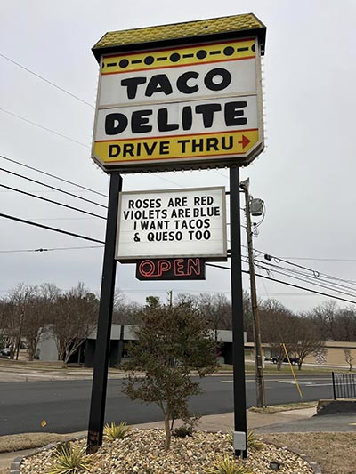
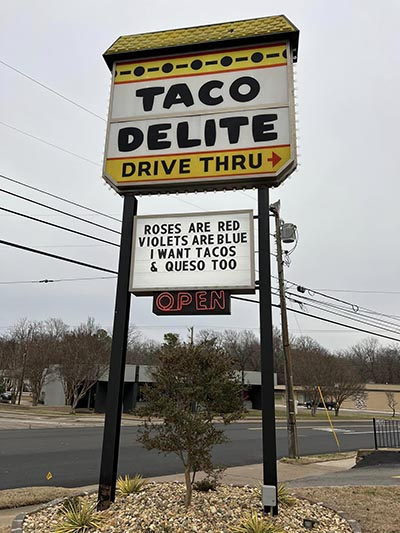

About Us
Taco Delite has been serving delicious Tacos, Supreme Salads, Taco Burgers, and Sweet Tea to the residents of Paris, TX for over 40 years. We strive to provide our customers with a high quality product and great customer service. We are proud to have received multiple rewards from the city of Paris, recognizing us as one of the cleanest fast food restaurants in the city. We appreciate your business and hope to see you soon!
Paris, TX
Paris, city, seat (1844) of Lamar county, northeastern Texas, U.S., on a ridge between the Red and Sulphur rivers, some 105 miles (170 km) northeast of Dallas. Laid out in 1845 and named for Paris, France, it developed after the arrival of the railroad in 1876. The city was replanned after a disastrous fire in 1916. A shipping point for cotton, grain, and livestock of the Blacklands Belt, it also has some light manufacturing. Paris also serves as a regional medical centre for northwest Texas and southeast Oklahoma. Paris Junior College was established in 1924. The Sam Bell Maxey House, built in 1868, is preserved as a state historic site. The city also boasts a 65-foot (20-metre) replica of the Eiffel Tower topped by a cowboy hat.
 
